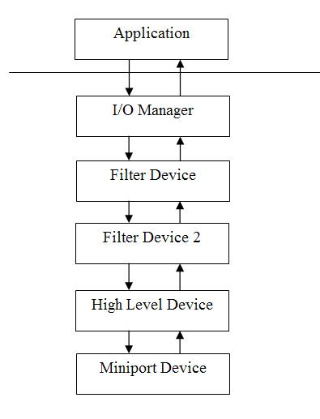

WDM设备堆栈stacks
这是第四篇介绍写设备驱动的文章，本篇我们将介绍设备栈的概念以及设备间的交互。我们将使用前面的例子来进行验证。我们将介绍过滤驱动的概念，并且创建一个过滤驱动，挂接到我们的驱动设备栈。
理论：
什么是设备栈？
谈到栈，通常我们可以想象为摞在一起的一堆物体，一个压另一个的上面。还有就是数据结构中作为一种算法实现的栈，是指先进后出的方法来存储临时对象。这两种描述是有关联的。然而，设备栈既不是指一种算法也不需要和临时对象打交道。因此，用这种摞在一起的一堆物体的简单描述更贴近一些。

设备栈最好的例子就是一堆盘子的类比。盘子一个压在另一个的顶上就像设备栈。另外一个细节要记住的就是我们总是说“设备栈“而不是“驱动栈“。 是否记得在第三篇中，一个驱动中创建了多个设备。这就意味着在一个物理驱动中的所有设备的栈会全部实现。
过滤驱动
一个过滤驱动是指一个驱动挂接在一个设备栈的顶端，在请求到达目标设备之前进行过滤处理。
你可以设想，设备栈中除了最后一个的设备外的其他设备都是过滤器。但这不符合事实。设备栈中的设备除过滤器外，通常都依赖于某个特殊的设备体系。例如，你通常得到靠近设备栈顶层的高层驱动，多数情况下，这些高层的驱动与用户模式的请求进行通讯和交互。
这些设备栈的设备为下层设备中止请求，直到链中的最后一个设备处理这个请求。底层的驱动靠近设备栈底部，就像 “miniport drivers”一样，跟实际的硬件通讯。
最好的例子就是文件系统，顶层的驱动维护着文件和文件系统的概念。他们知道文件存放在磁盘中的位置，底层驱动不知道文件，只是简单的理解请求读取磁盘扇区。他们知道怎样排队这些请求和优化磁盘搜索。但是他们不知道磁盘上的实际内容和怎样解释这些数据。
每一个设备过滤驱动都会被放在设备栈的顶部，就是说，如果在你之后另一个过滤驱动加到设备栈，那么现在它将在你的顶部。你不能保证自己永远在设备栈顶端。
为了加到设备栈，我们需要使用下面的API.
RtlInitUnicodeString(&usDeviceToFilter, L"\\Device\\Example");
NtStatus = IoAttachDevice(pDeviceObject,
&usDeviceToFilter,
&pExampleFilterDeviceContext->pNextDeviceInChain); 实际上，这个API会为了贴上设备，它会打开一个设备句柄，然后再关闭这个句柄。当API企图关闭这个句柄时，我们的驱动就会被挂在了设备栈上。所以我们必须确保IRP_MJ_CLEANUP 和 IRP_MJ_CLOSE 能被正确的处理，并且在他们调用的时候不会出现问题。
还有少许其他的API，其中一个是IoAttachDeviceToStack。这个实际上是IoAttachDevice 在打开一个设备句柄后调用的函数。
IRP处理
IRP被创建后，发送到设备栈的第一个设备。然后这个设备处理IRP，并且完成它或者向下传递到设备栈的下一个设备。IRP的一般规则是，你收到IRP后，你拥有它。如果你把它向下传递到下一个设备，你将不再拥有它，也不能再访问它。最后一个处理IRP的设备必须完成它。
在这个例子中，为了演示，我们创建简单的IRP。这个演示非常简单，我们的驱动会收到发来的IRP. 由于我们控制着所有的终点，在我们的实现中这里可以忽略一些方面。这仅仅是一个非常简单的演示，由于实际上我们完全控制了所有的终点，因此这会让我们实现得更加灵活和确保不出问题。
当我们创建一个IRP时，需要遵循以下几个简单步骤。根据irp的处理，这里有些小的变化。我们将一步一步的仔细的检查。
第一步：创建IRP
很明显，第一步我们需要创建IRP。我们可以使用IoAllocateIrp。下面是一个使用它的例句。
MyIrp = IoAllocateIrp(pFileObject->DeviceObject->StackSize, FALSE);
还有其他的api和宏都可以实现为你创建一个IRP.他们可以更加快捷的创建irp并设置参数。需要注意的一点就是在使用这个函数创建IRP时，要确信这个函数可以在你使用的irql级别下被调用。另一个要检查的就是，谁来释放这个IRP. 是I/O管理器负责管理和释放这个irp还是你自己？
下面是一个可以为我们设置参数的例子。
MyIrp = IoBuildAsynchronousFsdRequest(IRP_MJ_INTERNAL_DEVICE_CONTROL,
pTopOfStackDevice,
NULL,
0,
&StartOffset,
&StatusBlock);步骤2：设置参数
这一步是根据你需要什么样的功能来决定的。你需要设置FILE_OBJECT和IO_STACK_PARAMETER以及其他。在我们这个例子中，我们不提供FILE_OBJECT，我们设置最少的参数。为什么呢？原因就是这是个简单的例子，并且我们拥有所有的终点。既然我们控制了重点，实际上讲，我们能够用参数做任何我们想要做的事情。就像IOCTL一样，当发送IRP时，我们会知道你需要什么设置什么。实际上我们需要遵守这些规则，让其他驱动可以跟我们会话，但是这里仅仅是为了使这个例子看上去简单。
下面的代码是关于我们怎样设置IRP参数的。
PIO_STACK_LOCATION pMyIoStackLocation = IoGetNextIrpStackLocation(MyIrp);
pMyIoStackLocation->MajorFunction = IRP_MJ_INTERNAL_DEVICE_CONTROL;
pMyIoStackLocation->Parameters.DeviceIoControl.IoControlCode =
IOCTL_CREATE_NEW_RESOURCE_CONTEXT;
/*
* METHOD_BUFFERED
*
* Input Buffer = Irp->AssociatedIrp.SystemBuffer
* Ouput Buffer = Irp->AssociatedIrp.SystemBuffer
*
* Input Size = Parameters.DeviceIoControl.InputBufferLength
* Output Size = Parameters.DeviceIoControl.OutputBufferLength
*
* Since we are now doing the same job as the I/O Manager,
* to follow the rules our IOCTL specified METHOD_BUFFERED
*/
pMyIoStackLocation->Parameters.DeviceIoControl.InputBufferLength = sizeof(FILE_OBJECT);
pMyIoStackLocation->Parameters.DeviceIoControl.OutputBufferLength = 0;
/*
* This is not really how you use IOCTL's but
* this is simply an example using
* an existing implementation.
* We will simply set our File Object as the SystemBuffer.
* Then the IOCTL handler will
* know it's a pFileObject and implement the code that we
* had here previously.
*/
MyIrp->AssociatedIrp.SystemBuffer = pFileObject;
MyIrp->MdlAddress = NULL;注意，我们设置SystemBuffer来指向我们的文件对象。这样做是不严谨的。在这里，我们应该分配一个缓冲，然后把数据拷贝进来。那样我们能比较安全的让I/O管理器来释放内存或者当我们注销IRP的时候，我们来释放内存。
第三步：向下发送IRP
你需要向下给驱动发送irp. 你仅仅在IoCallDriver里指定DEVICE_OBJECT和IRP就可以了。
无论是你有怎样的DEVICE_OBJECT都可以用。然而，如果你想要从设备栈顶开始执行，最好使用像IoGetRelatedDeviceObject这样的API来找到顶层的设备对象。在我们的例子中，我有一个这样的调用来得到顶层设备。另一个是直接使用我们已经有的设备对象。如果你看调试输出，你就会注意有一个，我们没有经过过滤驱动。这是因为IoCallDriver是非常简单的，只是获得设备对象并且找出合适的函数进行调用。
NtStatus = IoCallDriver(pFileObject->DeviceObject, MyIrp);
第四步：处理和清除IRP
在我们向下发送irp之前有一件事情需要做，那就是创建一个“Completion Routine“。这个例程当IRP完成时，会得到通知。在这个情况下，我可以做一些事情。我们可以允许irp继续，以至于我们可以处理它的参数或者我们注销它。我们也可以让I/O管理器来释放它。这需要依赖我们创建irp的方式。为了回答“谁来释放它“的问题，你需要阅读关于分配IRP的API的ddk文档。错误地实现方法会造成灾难！
这是一个简单的例子，我们自己直接释放它。
IoSetCompletionRoutine(MyIrp, Example_SampleCompletionRoutine,
NULL, TRUE, TRUE, TRUE);
...
NTSTATUS Example_SampleCompletionRoutine(PDEVICE_OBJECT DeviceObject,
PIRP Irp, PVOID Context)
{
DbgPrint("Example_SampleCompletionRoutine \n");
IoFreeIrp(Irp);
return STATUS_MORE_PROCESSING_REQUIRED;
}或许你注意到，有时你看代码检查“STATUS_PENDING”和等待事件发生。在例子中，我们拥有所有的端点，不会发生这个事情。这也就是为什么讲一些细节被忽略了。在下篇文章，我们将详述这些概念。重要的是正好一次消化一部分。
在驱动中处理irp
一旦你得到IRP，你就拥有了这个IRP. 你就能够使用它做任何你想要的事情。 如果你处理它，当你处理完时你就必须要么完成它，要么把它向下传给另外的驱动。如果你把它传给其他的驱动，你就必须忘记它。你传递给的驱动现在负责完成它。
这个例子过滤驱动，我们地实现有些不同，在我们提供irp给例子驱动后，它想要处理参数。
这样，我们必须要捕获完成时并停止它。因为我们知道底层驱动将会完成它。所以，我们设置我们自己的completion routine, 我们就能停止它。下面就是我们的实现代码。
pIoStackIrp = IoGetCurrentIrpStackLocation(Irp);
pIoStackIrp = IoGetCurrentIrpStackLocation(Irp);
IoCopyCurrentIrpStackLocationToNext(Irp);
IoSetCompletionRoutine(Irp,
PIO_COMPLETION_ROUTINE) ExampleFilter_CompletionRoutine, NULL,
TRUE, TRUE, TRUE);
/*
* IoCallDriver() simply calls the
* appropriate entry point in the driver object associated
* with the device object. This is
* how drivers are basically "chained" together, they must know
* that there are lower driver so they
* can perform the appropriate action and send down the IRP.
*
* They do not have to send the IRP down
* they could simply process it completely themselves if they wish.
*/
NtStatus = IoCallDriver(
pExampleFilterDeviceContext->pNextDeviceInChain, Irp);
/*
* Please note that our
* implementation here is a simple one. We do not take into account
* PENDING IRP's oranything complicated. We assume that once we get
* to this locaiton the IRP has alreadybeen completed and our completetion
* routine was called or it wasn't completed and we are still able
* to complete it here.
* Our completetion routine makes sure that the IRP is still valid here.
*
*/
if(NT_SUCCESS(NtStatus)
{ /*
* Data was read?
*/
if(Irp->IoStatus.Information)
{
/*
* Our filter device is dependent upon the compliation settings of
* how we compiled example.sys
* That means we need to dynamically figure out if we're
* using Direct, Buffered or Neither.
*/
if(DeviceObject->Flags & DO_BUFFERED_IO)
{
DbgPrint("ExampleFilter_Read - Use Buffered I/O \r\n");
/*
* Implementation for Buffered I/O
*/
pReadDataBuffer = (PCHAR)Irp->AssociatedIrp.SystemBuffer;
if(pReadDataBuffer
&& pIoStackIrp->Parameters.Read.Length > 0)
{
ExampleFilter_FixNullString(pReadDataBuffer,
(UINT)Irp->IoStatus.Information);
}
}
else
{
if(DeviceObject->Flags
& DO_DIRECT_IO)
{
DbgPrint("ExampleFilter_Read - Use Direct I/O \r\n");
/*
* Implementation for Direct I/O
*/
if(pIoStackIrp && Irp->MdlAddress)
{
pReadDataBuffer = MmGetSystemAddressForMdlSafe(
Irp->MdlAddress, NormalPagePriority);
if(pReadDataBuffer &&
pIoStackIrp->Parameters.Read.Length)
{
ExampleFilter_FixNullString(pReadDataBuffer,
(UINT)Irp->IoStatus.Information);
}
}
}
else
{
DbgPrint("ExampleFilter_Read - Use Neither I/O \r\n");
/* Implementation for Neither I/O
*/
__try {
if(pIoStackIrp->Parameters.Read.Length >
0 && Irp->UserBuffer)
{
ProbeForWrite(Irp->UserBuffer,
IoStackIrp->Parameters.Read.Length,
TYPE_ALIGNMENT(char));
pReadDataBuffer = Irp->UserBuffer;
ExampleFilter_FixNullString(pReadDataBuffer,
(UINT)Irp->IoStatus.Information);
}
} __except( EXCEPTION_EXECUTE_HANDLER ) {
NtStatus = GetExceptionCode();
}
}
}
}
}
/*
* Complete the IRP
*
*/
Irp->IoStatus.Status = NtStatus;
IoCompleteRequest(Irp, IO_NO_INCREMENT);
....
NTSTATUS ExampleFilter_CompletionRoutine(
PDEVICE_OBJECT DeviceObject, PIRP Irp, PVOID Context)
{
DbgPrint("ExampleFilter_CompletionRoutine Called \r\n");
/*
* We need to return
* "STATUS_MORE_PROCESSING_REQUIRED" so that we can
* use the IRP in our driver.If we complete this here we
* would not be able to use it and the IRP would be completed. This
* also means that our driver
* must also complete the IRP since it has not been completed yet.
*/
return STATUS_MORE_PROCESSING_REQUIRED;
}由于我们返回STATUS_MORE_PROCESSING_REQUIRED给I/O管理器，IRP没有被完成。现在你可以在IoCallDriver后操作IRP. 然而现在当我们用完后，我们必须要完成它。这是因为我们停止了IRP地完成。记住，我们的例子中不要考虑STATUS_PENDING ，因为我们拥有所有的端点，并且我们尽力想让例子简单。
过滤例子
本篇过滤驱动例子，把自己挂在了我们在第三篇中创建的设备栈上。如果你记得实现，我们能在两个用户模式进程间进行交互。一个问题是，如果你输入大量的字符串，当读它的时候，用户模式应用程序仅仅显示一条字符串。这个问题，即便在用户模式应用中改正起来很简单，然而又有多大的意思呢？
相反，我们创建一个过滤驱动程序在读后直接截取IRP，并且操作IRP返回参数。他去掉字符串中所有的终止符（null字符），用空格替换。然后在字符串最后无效终止。显然这不是个完美的例子，我们覆盖了最后的字符，却不去检查是否需要。毕竟这仅仅是个简单的例子。
使用例子
为了使用这个例子，你需要做的事情跟第三篇中的一样，唯一不同的是，现在有另一种加载程序，你可在加载example.sys后运行它。它会加载examplefilter.sys ，并且会附加到example.sys上，不过是否加载examplefilter.sys，用户模式程序都可以运行。你可以在两种情况下运行看看他们的不同。入口点都有调试信息，你可以跟踪这些代码信息看看。
结束语
在本篇文章中，我们更多的学习了一些处理IRP和设备栈的知识。另外，我们还学习了如何实现一个简单的过滤驱动。在每一篇文章中，我们都努力在这些基本概念上构建驱动，所以我们可以更进一步的理解驱动是怎样工作的？以及如何开发驱动？
Introduction
This is the fourth edition of the Writing Device Drivers articles. This article will introduce the idea of device stacks and how devices interact with each other. We will use the previously created example device driver to demonstrate this topic. To do this we will introduce the idea of a “filter” driver in which we will create to attach to our own driver’s device stack.
What is a Device Stack?
A stack is general terminology that can be envisioned as a pile of objects that just sit on top of each other. There is also an algorithm implementation that defines a stack as a method to store temporary objects in which the last object in is the first object out (also known as LIFO). Both descriptions are related. However, a device stack is not an algorithm nor does it have anything to do with temporary objects. Thus the simple description of a pile of objects that simply sit on top of each other is more related.

The best example of a device stack would be in relation to a stack of plates. The plates sit on top of each other just like a stack of devices. The other detail to remember is that we say “device stack” not “driver stack”. In the third tutorial we remember that, a single driver can actually implement multiple devices. This means that a stack of devices could all be implemented in a single physical driver. This article and many others however do refer to “device” and “driver” interchangeably even though they are basically separate but related entities.
Filter Drivers
This is a very commonly used buzz word and I’m sure just about anyone who programs has heard of this. A filter driver is a driver that attaches to the top of a stack of devices in an effort of “filter” processing of requests to a device before they reach the device.
You may assume that all devices in a device stack are filters except for the last one but this is not the case. The devices in a device stack aside from filters generally depend on the architecture of that particular device. For example, you usually have higher level drivers that are near the top of the stack. In the most general case these higher level drivers communicate and interact with user mode requests. The devices in the stack start to break down the request for the next level device until the last device in the chain processes the request. Near the bottom of the device stack lie the lower level drivers like “miniport drivers” which may communicate to actual hardware for example.
The best example could be that of the file system. The higher level drivers maintain the notion of files and file system. They understand where the files are stored on the disk perhaps. The lower level drivers know nothing of files and simply understand requests to read sectors on a disk. They also understand how to queue these requests and optimize disk seeks but they have no knowledge of what is actually on the disk or how to interpret the data.
Every filter device that attaches to a device stack is put at the top. This means that, if another filter device attaches to the device stack after yours then it is now on top of you. You are never guaranteed to be at the top of the stack.
To attach to a device stack we will be using the following API implementation.
Hide Copy Code
RtlInitUnicodeString(&usDeviceToFilter, L"\\Device\\Example"); NtStatus = IoAttachDevice(pDeviceObject, &usDeviceToFilter, &pExampleFilterDeviceContext->pNextDeviceInChain);
This API will actually open a handle to the device in order to attach and then close the handle. When this API attempts to close the handle our driver will be attached to the device stack so we must ensure that the IRP_MJ_CLEANUP and IRP_MJ_CLOSE can be correctly handled and do not cause a problem since they will be called!
There are a few other APIs one is called IoAttachDeviceToStack. This is actually what IoAttachDevice calls after opening a handle to the device.
IRP Handling
The next thing we need to talk about further is IRP handling. The IRP is created and sent to the first device in the device stack. This device can then process the IRP and complete it or pass it down to the next device in the stack. The general rules of an IRP are that when you receive the IRP you own it. If you then pass it down to the next device you no longer own it and can no longer access it. The last device to process the IRP must complete it.
In this example we will be creating IRPs simply for demonstration purposes. The demonstration will be quite simple and we will be sending IRPs to our own driver. There are some aspects of our implementation here which are omitted in our implementation and things done in a non-standard fashion simply because we control all end points. This is a demonstration and very simple. Owning all end points allows us to be more flexible in what we actually implement since we are in total control and can ensure that nothing goes wrong.
There are a number of simple steps that need to be followed when creating an IRP. Depending on the handling of the IRP these can vary a little however we will be going over a very simple case step by step.
Step One – Create the IRP
This is the obvious first step we need to create an IRP. This is very simple you can simply use a function named IoAllocateIrp. The following is a simple code example using the API.
Hide Copy Code
MyIrp = IoAllocateIrp(pFileObject->DeviceObject->StackSize, FALSE);
There are other APIs and macros which can also create an IRP for you. These are quicker ways to help create the IRP and set the parameters. The one thing to watch out for is to make sure that the function you use to create the IRP is able to be called at the IRQL level you will be using. The other part to check is, who is allowed to free the IRP. If the I/O Manager will manage and free the IRP or if you have to do it yourself.
The following is an example of one that sets parameters for us.
Hide Copy Code
MyIrp = IoBuildAsynchronousFsdRequest(IRP_MJ_INTERNAL_DEVICE_CONTROL, pTopOfStackDevice, NULL,0, &StartOffset, &StatusBlock);
Step Two – Set the Parameters
This step depends on what functionality you want to do. You would need to setup the FILE_OBJECT, and the IO_STACK_PARAMETER and everything else. In our example we cheat. We don’t provide a FILE_OBJECT and we set minimal parameters. Why? Well, this is just a simple example and we own all end points. Since we are in control of all end points we can essentially do whatever we want with the parameters. However, if you read up on IRP_MJ_xxx and the specific functionality for that driver, such as IOCTL, you will know what you need to set when sending IRPs around. We actually should comply with these mandates as well so other drivers could talk to us but I attempted to just keep this example very simple.
The following code is how we set our IRP parameters.
Hide Shrink  Copy Code
Copy Code
PIO_STACK_LOCATION pMyIoStackLocation = IoGetNextIrpStackLocation(MyIrp); pMyIoStackLocation->MajorFunction = IRP_MJ_INTERNAL_DEVICE_CONTROL; pMyIoStackLocation->Parameters.DeviceIoControl.IoControlCode = IOCTL_CREATE_NEW_RESOURCE_CONTEXT; /* * METHOD_BUFFERED * * Input Buffer = Irp->AssociatedIrp.SystemBuffer * Ouput Buffer = Irp->AssociatedIrp.SystemBuffer * * Input Size = Parameters.DeviceIoControl.InputBufferLength * Output Size = Parameters.DeviceIoControl.OutputBufferLength * * Since we are now doing the same job as the I/O Manager, * to follow the rules our IOCTL specified METHOD_BUFFERED */pMyIoStackLocation->Parameters.DeviceIoControl.InputBufferLength =sizeof(FILE_OBJECT); pMyIoStackLocation->Parameters.DeviceIoControl.OutputBufferLength = 0/* * This is not really how you use IOCTL's but * this is simply an example using * an existing implementation. * We will simply set our File Object as the SystemBuffer. * Then the IOCTL handler will * know it's a pFileObject and implement the code that we * had here previously. */ MyIrp->AssociatedIrp.SystemBuffer = pFileObject; MyIrp->MdlAddress = NULL;
As you notice, we set the “SystemBuffer” to point to our File Object. This is not exactly how we really should have done this. We should have allocated a buffer and copied the data there. That way we could safely have the I/O Manager free the buffer or we could have freed the buffer when we destroy the IRP. Instead though, we did this quick example and we simply don’t allow the I/O Manager to free the IRP and we don’t free the SystemBuffer obviously.
Step Three – Send the IRP down
You need to send the IRP down to the driver. To do this, you simply specify the DEVICE_OBJECT and the IRP in the IoCallDriver API. You can essentially use whatever DEVICE_OBJECT you have. However, if you want to start at the top of the device stack, it’s best to find the top level device object using API’s such as IoGetRelatedDeviceObject. In our example, we have one that does the call to get the top level device and one that simply uses the Device Object we already have. If you read the debug output, you will notice that in the one we don’t go through the filter driver. This is because IoCallDriver is very simple. It just takes the Device Object and finds the appropriate function to call.
Hide Copy Code
NtStatus = IoCallDriver(pFileObject->DeviceObject, MyIrp);
Step Four – Process & Clean up the IRP
The one thing we did before we sent the IRP down was to create a “Completion Routine”. This is a routine that will get notified when the IRP has been completed. We can do a few things in this case, we can allow the IRP to continue so we can do processing on its parameters or we can destroy it. We can also let the I/O Manager free it. This is actually dependent on how you created the IRP. To answer the question of "who should free it", you should read the DDK documentation on the API you used to allocate it. Implementing the wrong method can lead to disaster!
This is a simple example and we simply free it ourselves.
Hide Copy Code
IoSetCompletionRoutine(MyIrp, Example_SampleCompletionRoutine, NULL, TRUE, TRUE, TRUE); ... NTSTATUS Example_SampleCompletionRoutine(PDEVICE_OBJECT DeviceObject, PIRP Irp, PVOID Context) { DbgPrint("Example_SampleCompletionRoutine \n"); IoFreeIrp(Irp);return STATUS_MORE_PROCESSING_REQUIRED; }
You may notice that, sometimes you see code that checks the “STATUS_PENDING” and may wait on an event. In our case we own all end points and this will not happen in this simple example. This is why some of these details are simply being omitted for simplicity. In the next articles, we will expand on these ideas and fill in the missing pieces. It’s important to just digest one piece at a time.
Handling IRPs in your driver
Once you get an IRP, you own that IRP. You can do whatever you want with it. If you process it you must then either complete it when you are done or pass it down to another driver. If you pass it down to another driver you must forget about it. The driver you passed it to is now responsible for completing it.
The example filter driver we have implemented though is a bit different. It wants to process the parameters after we have provided the example driver with the IRP. To do this we must catch the completion and stop it from being completed. This is because we know the lower level driver should and will complete it. So, by setting our own completion routine, we can stop this. This is done with the following code.
Hide Shrink  Copy Code
Copy Code
pIoStackIrp = IoGetCurrentIrpStackLocation(Irp); IoCopyCurrentIrpStackLocationToNext(Irp); IoSetCompletionRoutine(Irp, PIO_COMPLETION_ROUTINE) ExampleFilter_CompletionRoutine, NULL, TRUE, TRUE, TRUE); /* * IoCallDriver() simply calls the * appropriate entry point in the driver object associated * with the device object. This is * how drivers are basically "chained" together, they must know * that there are lower driver so they * can perform the appropriate action and send down the IRP. * * They do not have to send the IRP down * they could simply process it completely themselves if they wish. */ NtStatus = IoCallDriver( pExampleFilterDeviceContext->pNextDeviceInChain, Irp); /* * Please note that our * implementation here is a simple one. We do not take into account * PENDING IRP's oranything complicated. We assume that once we get * to this locaiton the IRP has alreadybeen completed and our completetion * routine was called or it wasn't completed and we are still able * to complete it here. * Our completetion routine makes sure that the IRP is still valid here. * */ if(NT_SUCCESS(NtStatus) {/** Data was read? */if(Irp->IoStatus.Information) {/** Our filter device is dependent upon the compliation settings of * how we compiled example.sys * That means we need to dynamically figure out if we're * using Direct, Buffered or Neither. */if(DeviceObject->Flags & DO_BUFFERED_IO) { DbgPrint("ExampleFilter_Read - Use Buffered I/O \r\n");/** Implementation for Buffered I/O */pReadDataBuffer = (PCHAR)Irp->AssociatedIrp.SystemBuffer;if(pReadDataBuffer && pIoStackIrp->Parameters.Read.Length 0) { ExampleFilter_FixNullString(pReadDataBuffer, (UINT)Irp->IoStatus.Information); } }else{if(DeviceObject->Flags & DO_DIRECT_IO) { DbgPrint("ExampleFilter_Read - Use Direct I/O \r\n");/** Implementation for Direct I/O */if(pIoStackIrp && Irp->MdlAddress) { pReadDataBuffer = MmGetSystemAddressForMdlSafe( Irp->MdlAddress, NormalPagePriority);if(pReadDataBuffer && pIoStackIrp->Parameters.Read.Length) { ExampleFilter_FixNullString(pReadDataBuffer, (UINT)Irp->IoStatus.Information); } } }else { DbgPrint("ExampleFilter_Read - Use Neither I/O \r\n");/* Implementation for Neither I/O */__try {if(pIoStackIrp->Parameters.Read.Length 0 && Irp->UserBuffer) { ProbeForWrite(Irp->UserBuffer, IoStackIrp->Parameters.Read.Length, TYPE_ALIGNMENT(char)); pReadDataBuffer = Irp->UserBuffer; ExampleFilter_FixNullString(pReadDataBuffer, (UINT)Irp->IoStatus.Information); } } __except( EXCEPTION_EXECUTE_HANDLER ) { NtStatus = GetExceptionCode(); } } } } } /* * Complete the IRP * */ Irp->IoStatus.Status = NtStatus; IoCompleteRequest(Irp, IO_NO_INCREMENT); .... NTSTATUS ExampleFilter_CompletionRoutine( PDEVICE_OBJECT DeviceObject, PIRP Irp, PVOID Context) { DbgPrint("ExampleFilter_CompletionRoutine Called \r\n"); /** We need to return * "STATUS_MORE_PROCESSING_REQUIRED" so that we can * use the IRP in our driver.If we complete this here we * would not be able to use it and the IRP would be completed. This * also means that our driver * must also complete the IRP since it has not been completed yet. */return STATUS_MORE_PROCESSING_REQUIRED; }
The IRP will then not be completed because we returned to the I/O Manager that more processing needs to be done. Now we can manipulate the IRP after the IoCallDriver, however we must now complete it when we are done. This is because we stopped the completion of the IRP. Remember our example does not take into account STATUS_PENDING because we own all end points and we are trying to keep this example as simple as possible.
The Filter Example
The example filter driver in this article attaches itself to the driver’s stack that we created in article 3. If you remember that implementation, we were able to communicate between two user mode applications. One problem with doing this is that, if you typed in a number of strings, the user mode application only prints one string while it may have read three. This could have been fixed in the user mode application easily however how much fun would that be?
Instead we have created a filter driver that simply intercepts the IRP after the read and manipulates the IRP return parameters. It removes all the NULL terminators from the string and replaces them with spaces. It then simply NULL terminates the end of the string. It’s not a perfect example obviously, since we overwrite the last character and don’t attempt to even see if we need to, but this is just a simple example.
These examples just do the minimum necessary, so they work and try not to trap (in the simplest case). I would rather provide some explanation with a simple example than a full fledged example with all the bells and whistles. Those can already be found in the DDK and long articles on MSDN which explain everything all at once.
Using the example
To use the example you simply do the same as you did with article 3. The only difference is that, there is now another loader program that you can run after you have already loaded example.sys. This one will load examplefilter.sys and it will attach to example.sys. The user mode programs can run with or without examplefilter.sys. You can run it both ways and see the differences. Entry points all have debug statements so you can follow the code paths.
Conclusion
In this article we learned a little more about IRP handling (for the purpose of understanding device stacks) and device stacks. We also learned how to implement a very simple filter driver. In each article we will attempt to build upon these basic ideas, so that we can further understand how drivers work and how to develop drivers.
The next article in the series will attempt to combine everything learned over these 4 articles and further explain IRP Handling.